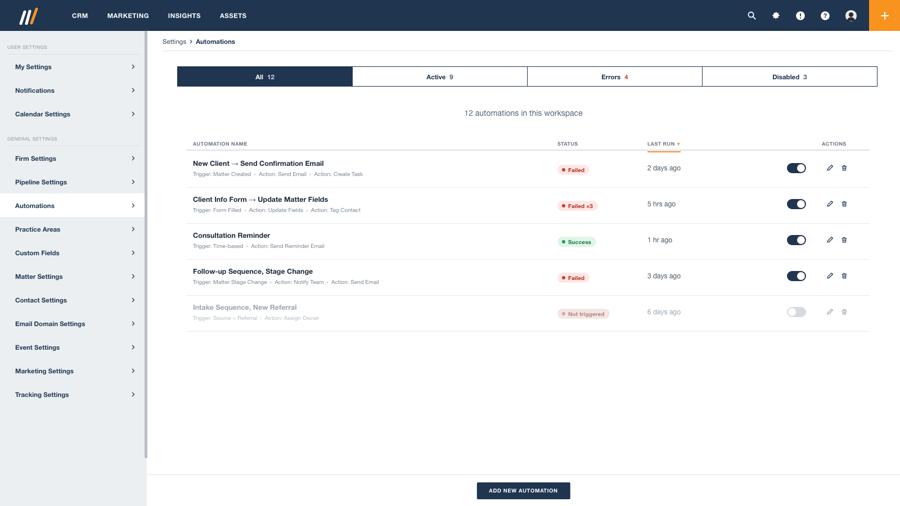
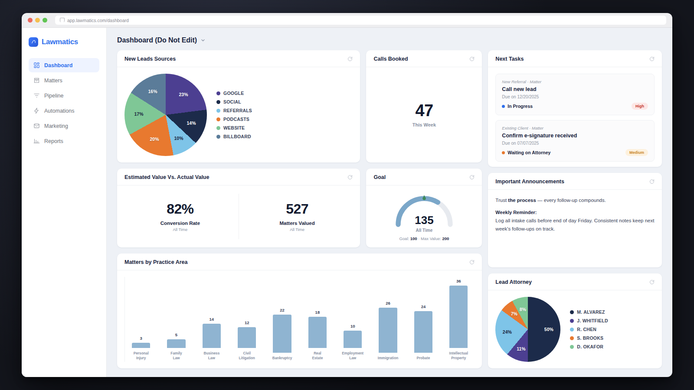
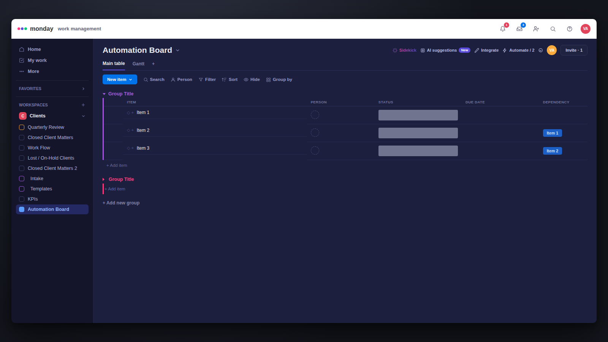
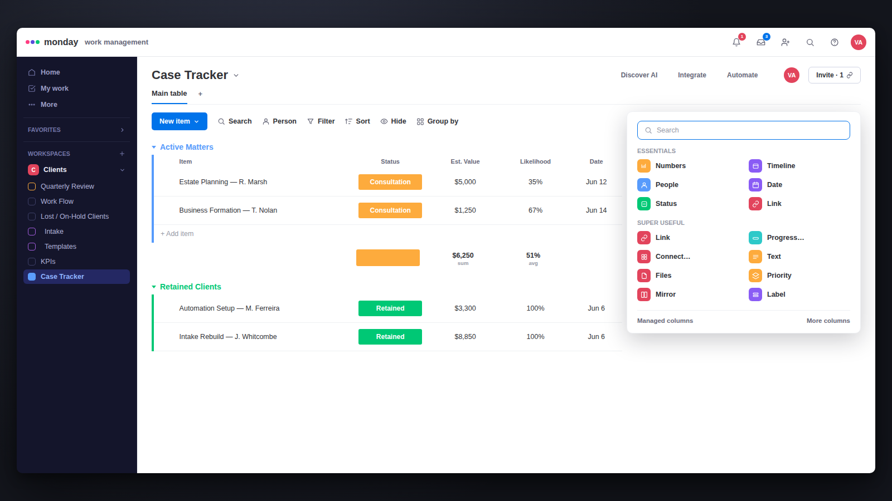
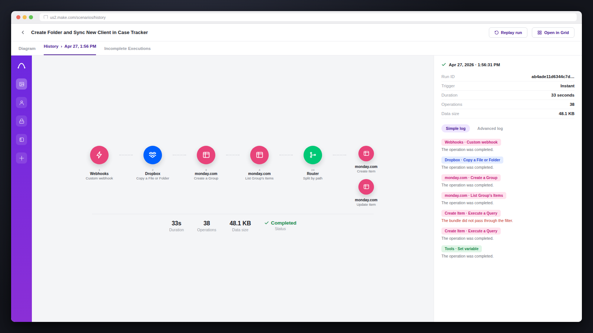
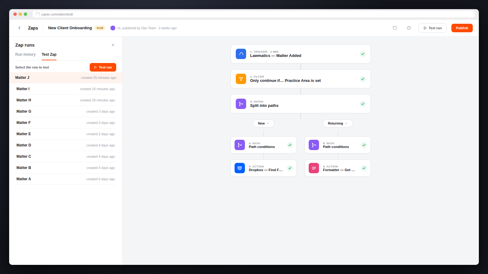
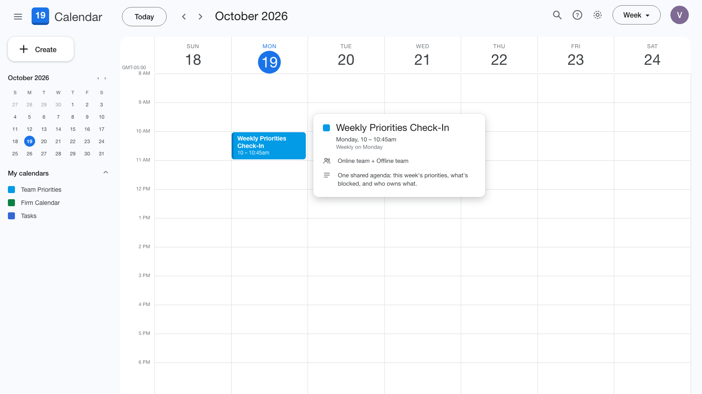

A law firm's online and offline teams stopped guessing once all five systems finally told the same story.
Stuck between five systems.
The firm's work was spread across five systems (Monday.com, Lawmatics, Dropbox, Zapier and Make), and none of them told the same story. The online team worked in one, the offline team worked in another, and status lived wherever someone last updated it by hand.
Audit before automate.
Before building anything new, Monday.com and Lawmatics got audited on their own terms, then mapped against where online and offline work actually had to meet.
Traced every existing automation to find where it was silently failing.
Mapped what the offline team actually needed visibility into, day to day.
Traced the full path from lead to intake to case, online team to offline team.
Planned how Zapier and Make would keep every system in sync going forward.
The firm wasn't short on effort, it was short on one system both teams could trust.
Underneath it, 3 operational gaps.
Lawmatics workflows were breaking silently, so the CRM data itself couldn't be trusted.
Neither Monday.com nor Lawmatics had a dashboard, so status lived in people's heads instead of on a screen.
None of the systems talked to each other, so online and offline teams worked from two different pictures of the same firm.
6 moves, one shared system.
The system of record could finally be trusted.
The firm's Lawmatics automations were misfiring, silently breaking workflows the team depended on without anyone noticing until something fell through. Those were rebuilt from the ground up before anything else touched the system, so every automation downstream had a foundation that actually worked.

The case and client side became visible at a glance.
With the automations fixed, the CRM's data was finally trustworthy enough to build reporting on top of. New dashboards gave the online team, and leadership, a real-time view into where every case actually stood, instead of clicking through individual records to find out.

The offline team stopped chasing status by hand.
On the operations side, Monday.com automations took over the manual handoffs and status updates that used to depend on someone remembering to do them, so work moved forward without a person having to push it at every step.

The offline team got the same visibility the online team now had.
A matching set of dashboards went up on Monday.com, giving the operations side of the business the same real-time view Lawmatics now gave the case side, so both teams were finally looking at the same picture instead of two separate ones.

Online and offline finally ran off the same data.
Zapier and Make became the connective layer between Monday.com and Lawmatics, so an update in one system reflected in the other automatically. Dropbox, where all of the firm's documents lived, was wired into that same layer, so files stayed tied to the right case without anyone moving them by hand.


The whole team stayed on the same priorities.
With every system finally showing the same picture, one weekly meeting was set up to check in on priorities. Online and offline teams now review where things stand together, which keeps everyone on track instead of drifting back into separate conversations.

What changed, once all five systems agreed.
Less founder involvement, with fewer manual status updates chased down each week.
Case handoffs now moving without manual follow-up.
All five systems now show the same picture, in real time.
Client satisfaction, with cases delivered on time more often.
Audited Lawmatics and Monday.com, fixed the broken Lawmatics automations.
Built dashboards on Lawmatics and Monday.com, plus new Monday.com automations.
Connected Monday.com and Lawmatics via Zapier and Make, added Dropbox into the same layer.
From chasing status across five systems that never agreed, to one shared view the whole team works from.
The firm was growing faster than its tools could keep up.
If your team is split across tools that don't talk to each other, that's not a tooling problem, it's a systems problem, and it's fixable.
Book a discovery call →